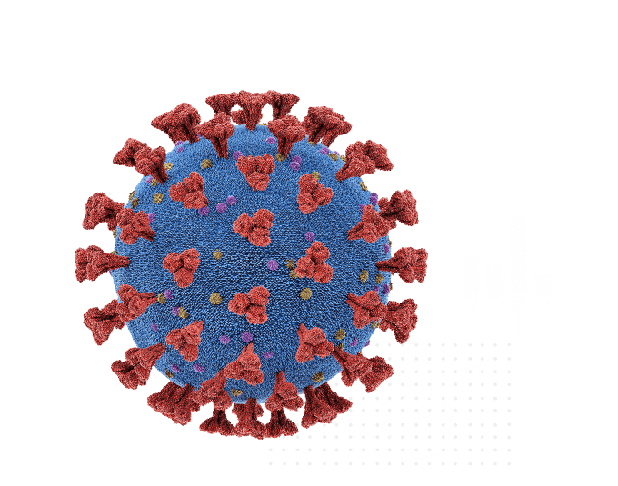
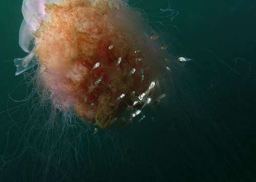

Covid, RSV ve Grip: Bir Viral Girişim Olgusu Mu?
Pandemiden üç yıl sonra, Covid-19 hala güçlü bir şekilde ilerliyor ve vaka sayıları hızla yükseldikçe, azaldıkça ve sonra tekrar yükseldikçe dalgalanmaya neden oluyor. Ancak geçtiğimiz sonbaharda yeni bir şeye - daha doğrusu eski bir şeye - gribin geri dönüşüne tanık olduk. Artı, normal yıllarda çok az manşete çıkan bir virüs olan solunum sinsityal virüsü (RSV) kendi dalgalanmasında tutuşarak bir "üçlü hastalık" yarattı.
Bu eski düşmanlardaki artışlar özellikle dikkat çekiciydi çünkü grip ve RSV, pandeminin ilk iki kışında neredeyse tamamen ortadan kalkmıştı. Daha da şaşırtıcı olanı, gribin belirli bir versiyonunun nesli, erken Covid salgını sırasında tükenmiş olabilir. Dünya Sağlık Örgütü'nün gözetim programı, Mart 2020'den beri B/Yamagata gribi suşunu kesin olarak tespit etmedi.
Ancak son birkaç yıl, insan-virüs ilişkileri için oldukça sıra dışı zamanlar oldu ve tecrit ve maskeler, grip ve RSV'nin insan burun deliklerine sızmasını önlemede uzun bir yol kat etti. Yine de uzmanlar, Covid kasıp kavururken başka bir faktörün onları uzak tutmuş olabileceğini düşünüyor. Buna viral girişim deniyor ve basitçe bir virüsün varlığının diğerini engelleyebileceği anlamına geliyor.

Girişim kelimesi dalga girişimine atıfta bulunmaktadır. Dalga girişimi birden fazla dalganın üst üste binmesi sonucu birbirini kuvvetlendirmesi ile zayıflatması durumudur.
Viral girişim, laboratuvardaki tek tek hücrelerde ve tek tek hayvanlarda ve birden çok virüse maruz kalan insanlarda meydana gelebilir ancak aynı zamanda, yeterli sayıda insan, diğerlerinin gelişmesini engellemeye yetecek kadar bir virüs kaparsa, tüm popülasyonda da rol oynayabilir. Bu, sırayla baskın olan bireysel virüslerin neden olduğu enfeksiyon dalgalarına neden olur
Bilim adamlarının bu tür kalıpları ilk kez gözlemlemesi değildi. Örneğin 2009'da korkulacak virüs, o yılın baharında domuzlardan insanlara sıçrayan domuz gribiydi. Sonbahar geldiğinde hızlanacak gibi görünüyordu ama Avrupa'nın bazı bölgelerinde aniden durdu. Soğuk algınlığından sorumlu olan ve muhtemelen okula dönen çocuklar tarafından yayılan rinovirüs, domuz gribinin yeniden hakimiyet kazanmasından önce bir dizi hafta boyunca merkez sahnedeydi. Bu grip türü daha sonra RSV'nin tipik sonbahar yükselişini iki buçuk aya kadar geciktirdi.
Girişim Mekanizması
Vücutta girişim meydana gelmesinin birkaç yolu vardır. Biri, iki virüsün konakçı hücrelere girmek için aynı molekülü kullanmasıdır. A virüsü oraya önce varırsa ve tüm bu moleküler kapı kollarını kaparsa, o zaman B virüsünün şansı kalmaz.
İki virüs, yeni viral proteinler yapmak için makineler veya o hücreden kaçıp başkalarına bulaşma yolları gibi, hücre içindeki aynı kaynaklar için rekabet ederse, başka bir tür girişim meydana gelebilir. Uzmanlar: "Bunu iki virüs arasındaki bir yarış olarak düşünün," diyor.
Ancak en iyi anlaşılan girişim yöntemi, omurgaları olan tüm hayvanların (ve muhtemelen bazı omurgasızların da) hücreleri tarafından yapılan interferon adı verilen savunma molekülü ile ilgilidir. Bir hücre bir virüsü, herhangi bir virüsü algıladığında interferon yapmaya başlar. Ve bu da, bir dizi savunma genini harekete geçirir . Bu genlerin ürünlerinden bazıları hücre içinde veya hücrenin sınırlarında çalışır, burada ek virüslerin girmesini engeller ve zaten var olan virüslerin hücreden çoğalmasını veya hücreden çıkmasını engeller. Hücreler çevrelerine interferon salgılayarak diğer hücreleri gardlarını almaları konusunda uyarır. Tüm bunların sonucu: İkinci bir virüs ortaya çıkarsa, hücrelerin savunmaları çoktan harekete geçmiştir ve onu devre dışı bırakabilirler.
Bu “dikkat et” mesajı tüm vücuda yayılabilir. Dolayısıyla, teorik olarak, rinovirüs gibi bir solunum virüsü almak, örneğin bağırsaktaki savunmaları etkinleştirebilir ve aynı kişiyi norovirüs gibi tamamen farklı bir virüsten koruyabilir. Ancak durum, ilgili virüslere, üretilen interferon miktarına ve diğer faktörlere bağlı olarak değişecektir. Ohio'daki Cleveland Clinic'te virolog olan ve 2015'te Annual Review of Virology için interferon ve virüsler arasındaki etkileşimler hakkında yazan Ganes Sen, "Virüslerin çoğunda interferon sistemini nötralize etmenin yolları var" diyor.
Bilim adamları bunu laboratuvardaki hayvanlarda ve diğer sistemlerde ileri geri inceliyorlar. Örneğin, Yale School of Medicine'de bir immünolog olan Ellen Foxman, gerçek insan solunum yolu hücrelerinden yapılan laboratuvarda yetiştirilen dokulardaki viral etkileşimleri araştırıyor. Bir deneyde domuz gribi ve rinovirüs ailesinin tipik bir temsilcisi üzerinde çalıştı. Araştırmacılar insan dokusuna önce rinovirüs, ardından domuz gribi bulaştırdığında, interferon gribin tutunmasını engelledi. Benzer çalışmalarda, rinovirüs enfeksiyonunun sonraki SARS-CoV-2 enfeksiyonuna da müdahale ettiğini bulmuştur.
Laboratuardaki dokulardan insanlara veya popülasyonlara tahminde bulunmak şüpheli ama Foxman, çalışmaların biyolojik gerçeği yansıttığını düşünüyor. "Bir rinovirüs enfeksiyonu kaparsanız, bu sizi bir süreliğine başka bir virüse karşı nispeten dirençli hale getirecektir" diyor. Foxman, koruyucu etkinin muhtemelen günler veya haftalar sürdüğünü tahmin ediyor.
Ancak soğuk algınlığının size diğer virüslere karşı geçici bir bağışıklık sağlayacağına güvenmeyin. Müdahale garanti edilmez: Aynı anda birden fazla virüs yakalamak kesinlikle mümkündür. Ve interferon da her zaman faydalı değildir; bazen insanları enfeksiyona karşı daha duyarlı hale getirebilir, daha az değil. İyi bilinen bir örnek, gribin insanları ikincil bir bakteriyel enfeksiyona karşı daha duyarlı hale getirmesidir.
Devam eden salgında, müdahalenin dünya çapındaki popülasyonlarda RSV ve gribin durdurulmasında (varsa) ne kadar rol oynadığını söylemek hala zor. 2020'deki ilk Covid dalgası sırasında Foxman, diğer virüslere büyük ölçekte müdahale etmesi için yeterli sayıda insanın Covid'e sahip olmadığını düşünüyor. (RSV, 2021'de insanlar maskeleme ve diğer önlemleri gevşettikçe alışılmadık bir yaz zirvesi yaşadı.)
Şu anda Kuzey Yarımküre'de devam eden üçüncü Covid kışında koşullar yine farklı. Artık pek çok insan, yakın tarihli bir nöbet veya aşı nedeniyle Covid'e karşı bağışıklığa sahip, ancak yakın geçmişte çok azı RSV veya grip geçirdi. Bu, grip ve RSV için erken ve sert vuran devasa bir ikili geri dönüş sahnesi hazırladı.
2022-23 üçlü kışı sırasındaki herhangi bir potansiyel müdahale, epidemiyologlar mevsime dönüp her virüsün sırasını alıp almadığını görebildiklerinde daha belirgin hale gelecektir. Zaten, kış tatillerinin ardından Covid yükselişe geçerken, RSV ve grip düşüş dalgalarının zirve yapmış olabileceğine dair göstergeler var. Ancak, üçlünün yeniden yükselmesi için bol bol fırsat sağlayan birkaç soğuk ay daha var.
